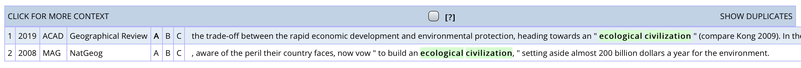
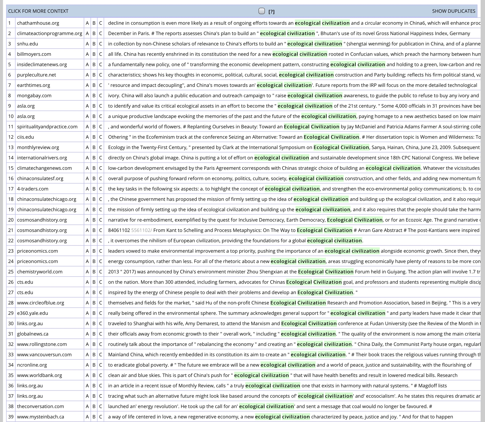

每日一句｜「文明」
逛 PIIE 的时候，看到一篇讲世行的，里面提到了中国，就打开看了看。读着读着，读到一句：
As incomes in China are rising, its citizens are increasingly concerned about the environment, and leadership is interested in implementing policies consistent with the ideal of ecological civilization.
我整个人都激灵了一下。要知道，大家接受的翻译教育（if any）肯定都强调过，「文明」在中文中，不能直接等于表示人类社会发展阶段的 civilization，有时更可能是「用来指示一种社会现象的正向发展及其发展的水平或高度」。如《现代汉语词典》对「文明」的定义：
【文明】wénmíng ❶ [名] 文化①（人类在社会历史发展过程中所创造的物质财富和精神财富的总和，特指精神财富，如文学、艺术、教育、科学等。）：物质～。❷ [形] 社会发展到较高阶段和具有较高文化的：～人｜～国家。❸ 旧时指由西方现代色彩的（风俗、习惯、事物）：～结婚｜～棍儿（手杖）。
「生态文明」若按此观，指的就是生态环境保护得好、水平高，或者在这方面做了很大努力，成效很好。用 progress 等更合适，如「生态文明建设」译为 promotion of ecological progress，「生态文明制度」译为 system for ecological improvement。
有篇文章讲这一点讲的很好，大家可以在后台回复「文明」获取（不幸的是，这片上有我的批注，较有碍观瞻；如果学校可以用知网，文章篇名为《社会制度、意识形态关键词“文明”“精神”英译探析》，作者杜争鸣（下简称「杜文」，大家可以自行下载阅读。
但看到这一处英文，我就又去网上搜索了一番，找到了不少与杜文相抵触，而采用 ecological civilization 的文段，如：
Against the backdrop of climate chaos this book explores the vision of an ecological civilization by asking eight key questions and drawing answers from relational philosophies, the ecological sciences, systems thinking, network theory, ..
What Is Ecological Civilization: Crisis, Hope,and the Future of the Planet (Philip Clayton & Wm. Andrew Schwartz)
An immediate turn in the direction of a global ecological civilization is therefore the only real option. It is impossible to foresee what such a civilization will look like that will be a work in progress for future generations to shape.
Abundant Earth: Toward an Ecological Civilization (Eileen Crist)
现在看来，我国的对外宣传工作已经比较到位了，外国人也接受了我们的「生态文明」的逐字对译。杜文应该算是过时了，今后应该可以更放开手脚一些了。
你以为你以为的就是你以为的，而且我告诉你的就是你应该以为的？你以为现在就可以放开手脚，随便用 civilization 了？
不知道大家在读上面的引文时，有没有感觉不对劲？比如说，引文中所说的 ecological civilization 到底是什么意思？要回答这个问题，我们先来看一段意思绝对符合中文语境的引文，其中用到了 ecological civilization：
Ecological Civilization part of former President Hu Jintao’s scientific outlook on development and harmonious socialist society … It emphasizes paying attention to the environmental consequences of economic growth and supports giving priority to sustainable development.（有改动）
Politics in China: An Introduction (William A. Joseph)
这一条既有中文的语境，用的又是字面直译的表达，乍看之下没什么问题，也能用作「生态文明 = ecological civilization」的证据。但问题在于这本书的性质，以及这一段文字的性质。这本书看标题，是一本严肃的学术著作，探讨的是非英语母语地区的情况，对于相关的术语，自然以字面直译为最佳，这样不会导致过度发挥，以致偏离源语含义。但这样产生的译文，未必处处都符合源语的语境。
再说语境。这段文字选自该书的索引部分，也就是将书中出现的概念，按首字母顺序排列的查阅表。此处「生态文明」作为词头，自然不可能罗列出符合各类语境的一切可能用法，只能如上条所说，选取最直接、最对应的翻译方法。细读也会发现，后文只是在对词头下定义，二者完全脱离了联系，自然，解释部分也就完全不需考虑词头的语境。因此，ecological civilization 只能说完美符合本书写作的目的，至于是否符合实际使用的需要、能否传达各类文件报告中「生态环境」的含义，则不在该书作者的考虑范围之内。
上述考察说明，在查证表达时，不能看到字面符合自己的想法，就认定字面表达放之四海而皆准，必须要确保表达和语境相符，才能审慎选用。那既然如此，我们就不得不考察 ecological civilization 这个搭配在母语者口中 / 笔下，到底会用在什么样的语境中。查询 COCA 结果如下：

查询 iWeb 结果如下：

Google Books ngram 的部分结果包括：
The planet is no longer the one the ancestors knew, or even the one our living elders grew accustomed to and loved. If the death-renewal-rebirth transition happens this time, it will of necessity find its way from industrial civilization to ecological civilization or, in Thomas Berry’s phrase, from “technozoic age” to an “ecozoic”one.
Earth-honoring Faith: Religious Ethics in a New Key (Larry L. Rasmussen)
The new form of civilization we so urgently need will require new ways of thinking and relating –ones that are more socially responsible, ecological, “mindful,” and coherent–and new ways of educating ourselves. The essays in this volume describe features of an emerging, relational vision of civilization and some of the educational practices it suggests.
Educating for an Ecological Civilization: Interdisciplinary, Experiential, and Relational Learning (Marcus Ford & Stephen Rowe)
Organic Marxism shows why the situation is not hopeless, however. The vast majority of humans favor sustainable systems and lifestyles. With this growing support, it’s possible to begin laying the foundations for a new, ecological civilization on this planet. … Without a planetary crisis, the rich would remain in power. As we approach the planet’s limits, however, there is no other option but to shift to an organic, ecological civilization. Clayton and Heinzekehr show how scientists and economists, farmers and small business people, artists and religious leaders are coming together around the globe, building communities for the common good.
Organic Marxism: An Alternative to Capitalism and Ecological Catastrophe (Philip Clayton & Justin Heinzekehr)
语料库的数据，刨除涉及中国的、讲中国的，最后也剩不了几条结果。仅有的结果中可以看出，ecological civilization 基本是整体作为一个完整的概念提出，而非附加「建设」「制度」等词构成偏正结构。这意味着，在此类语境中，ecological civilization 意味着 civilization that’s ecological / eco-friendly，侧重点在 civilization 上，描述的是某一具体的社会形态。而中文的「文明」可能是虚位词，即将「生态」作为与「物质」「精神」相对的另一个范畴，添加范畴词「文明」保持对仗，但范畴词本身不表示任何含义，或如杜文所说，表示「社会现象的正向发展及其发展的水平或高度」的意思。
如此看来，ecological civilization 不应作为中文语境下「生态文明」的对应词。但真的如此吗？
生态文明建设成效显著。大力度推进生态文明建设，全党全国贯彻绿色发展理念的自觉性和主动性显著增强，忽视生态环境保护的状况明显改变。生态文明制度体系加快形成，主体功能区制度逐步健全，国家公园体制试点积极推进。全面节约资源有效推进，能源资源消耗强度大幅下降。重大生态保护和修复工程进展顺利，森林覆盖率持续提高。生态环境治理明显加强，环境状况得到改善。引导应对气候变化国际合作，成为全球生态文明建设的重要参与者、贡献者、引领者。
We have made notable progress in building an ecological civilization.
We have devoted serious energy to ecological conservation. As a result, the entire Party and the whole country have become more purposeful and active in pursuing green development, and there has been a clear shift away from the tendency to neglect ecological and environmental protection. Efforts to develop a system for building an ecological civilization have been accelerated; the system of functional zoning has been steadily improved; and progress has been made in piloting the national park system. Across-the-board efforts to conserve resources have seen encouraging progress; the intensity of energy and resource consumption has been significantly reduced. Smooth progress has been made in major ecological conservation and restoration projects; and forest coverage has been increased. Ecological and environmental governance has been significantly strengthened, leading to marked improvements in the environment. Taking a driving seat in international cooperation to respond to climate change, China has become an important participant, contributor, and torchbearer in the global endeavor for ecological civilization.
十九大报告偏偏剑走偏锋，这一段四个「生态文明」，三个用了 ecological civilization。但同样的趋势，在 2017（同年）、2018、2019、2020 四年的政府工作报告中并未出现：
六是加强生态文明建设，绿色发展取得新进展。（GWR-2017）
Sixth, we strengthened ecological conservation and made fresh progress in pursuing green development.
（八）坚持人与自然和谐发展，着力治理环境污染，生态文明建设取得明显成效。（GWR-2018）
Eighth, with a commitment to achieving harmony between human and nature, we have taken major steps to address pollution, and achieved notable progress in ecological conservation.
……生态文明建设成效显著。（GWR-2019）
Marked achievements were made in ecological conservation.
实施重要生态系统保护和修复重大工程，促进生态文明建设。（GWR-2020）
We will carry out major projects for protecting and restoring key ecosystems to promote ecological conservation.
甚至再往前算，十八大报告也未使用 ecological civilization：
生态文明建设扎实展开，资源节约和环境保护全面推进。
Solid steps have been taken to promote ecological progress, and comprehensive progress has been made in resource conservation and environmental protection.
但既然十九大报告如此使用，肯定背后有其道理，在此不妨猜测一二：
- 用 ecological conservation 一来借鉴外部已有的表达，让对外传播更地道，同时，外部表达可以如实传达「生态文明」的字面意思；
- 对这个词的内涵有了新的理解与界定，过去不敢体现，现在敢于通过英文表达出来，体现主动把握对外宣传话语权的趋势。
这两个因素，或还可叠加另一重考虑：十九大报告与其他文本相比，最显著的特点在于「生态文明」单独占了一整段，且这一整段反复强调「生态文明」「生态环境」等概念，并没有过多涉及污染治理等关联概念。采用 ecological civilization，可以凸显「文明」二字的分量。
当然，上述「理据」都是猜测，具体的决策过程，恐怕需要亲历者才讲得清楚。况且，civilization 这个词能不能用、什么时候用，也远不止「生态文明」这一个场合。其他词，例如「精神文明」（在杜文中也有涉及），也需要另作观察，再下决定。至于「精神文明」的处理方法究竟几何，就交给各位读者调查判断吧。
欢迎将您的想法、评论、意见、建议发送至 harveyjanson@icloud.com，请注明「讨论」字样，我会尽量回复。